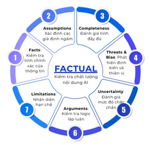
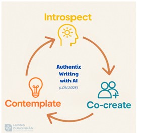
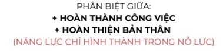
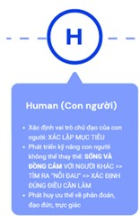
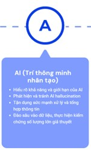
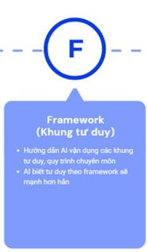
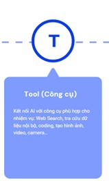

Vận
Dụng AI Hiệu Quả: Con Người Là Trung Tâm
Bài viết này tổng
hợp các nguyên tắc cốt lõi và góc nhìn quan trọng về
việc sử dụng AI tạo sinh (Generative AI) từ buổi
workshop, đặc biệt nhấn mạnh vai trò trung tâm của
con người. Các chủ đề chính bao gồm: tầm
nhìn về sự phát triển của AI, cách thức giao tiếp
hiệu quả với AI, phương pháp kiểm chứng
thông tin do AI tạo ra, tầm quan trọng của việc
đưa yếu tố con người (như cảm xúc,
câu chuyện, triết lý cá nhân) vào quá trình làm việc với
AI, và việc sử dụng AI một cách có đạo
đức.
AI tạo sinh
(Large Language Models - LLMs) được coi là "bộ não mở
rộng" của con người, yêu cầu tương
tác hai chiều, phản biện và đồng sáng tạo. Trong
buổi training thầy Nhân cũng bày tỏ quan điểm
rằng “ AI đúng nghĩa là phải có phản biện
trong sử dụng”.
Nó không chỉ là
công cụ làm những công việc đơn lẻ (như
tạo hình ảnh, video) mà có khả năng nâng cấp toàn
diện cách làm việc, xử lý thông tin, ra quyết định,
tương tác xã hội và thậm chí định hướng
cuộc đời.
Vai trò của con
người là cung cấp "đời thật" cho
AI, bao gồm dữ liệu nguyên bản (thông tin, cảm
xúc, câu chuyện, ý tưởng, triết lý, niềm tin).
Sáng tạo đột phá thực sự (vượt ra khỏi
khung tư duy hiện có) vẫn là khả năng của con
người. AI hiện tại chỉ tối ưu các thuật
toán đã có.
Sự phát triển
của AI hướng tới hệ sinh thái toàn diện (AI
agents, thiết bị kết nối AI) nhưng luôn cần
"human in the loop" (con người tham gia vào quy trình). Tiết
kiệm thời gian nhờ AI nên được sử dụng
để kết nối sâu sắc hơn với con người,
đồng nghiệp, khách hàng, và thực tế, thay vì chỉ
tăng khối lượng công việc.
“AI nhanh để chúng ta được
chậm lại”
Thay vì đặt
câu hỏi, cần "chỉ huy" AI bằng các mệnh
lệnh rõ ràng và chuẩn xác.
Động từ
(Verbs): Sử dụng
động từ chính xác để định hình hành
động cụ thể bạn muốn AI thực hiện.
Càng biết nhiều động từ, càng có nhiều cách
dùng AI. "Bạn biết càng nhiều động từ,
tức là bạn có trong tay càng nhiều cách dùng AI vào những
tình huống, nhiệm vụ khác nhau."
Danh từ về
thành phẩm (Product Nouns): Xác định rõ sản phẩm đầu ra mong
muốn (ví dụ: bản tóm tắt điều hành,
đánh giá tổng quan bằng biểu đồ radar, phân
tích chi tiết...).
Danh từ về
phương pháp (Method Nouns): Nêu rõ phương pháp hoặc cấu trúc mong muốn
(ví dụ: SWOT analysis, phân tích cohort, wiki...).
Phân vai
(Role-playing): Gán vai
trò cho AI (ví dụ: curriculum developer, consultant) để nó tập
trung vào chuyên môn. Nên phân vai bằng tiếng Anh và tránh gán vai
trò là một người cụ thể (nhân vật nổi
tiếng) vì AI học từ văn bản viết về họ
chứ không phải chính họ.
Cung cấp tri
thức/dữ liệu (Knowledge/Data): Cung cấp đầy đủ
thông tin và dữ liệu cần thiết cho AI làm việc.
Đối thoại
(Dialogue): Làm việc
với AI là quá trình trao đổi qua lại, không phải
chỉ một lần nhập lệnh. ◦
Tính từ (Adjectives): Mô tả tính chất của kết
quả mong muốn (ví dụ: hấp dẫn, ấn tượng,
sâu sắc, khoa học, chính xác, chi tiết).
Tránh những
câu lệnh chung chung, yêu cầu một thành phẩm cho mỗi
câu lệnh để đảm bảo độ sâu và dễ
kiểm soát.
Xác minh đa
nguồn (Triangulation): Kiểm
chứng thông tin từ ít nhất ba nguồn khác nhau không
liên quan tới nhau.
Ba câu hỏi kiểm tra thiết yếu
cho kết quả AI:
1.
Thông tin này có chính xác
không?
2.
Thông tin này có phù hợp
với hoàn cảnh cụ thể của tôi không? Thông tin này có phù hợp
với giá trị của tôi không?
Thiên kiến nhận thức có thể ảnh hưởng đến việc đánh giá kết quả AI (thiên kiến tự tin thái quá, bảo tồn năng lượng nhận thức, điền vào chỗ trống).
"Thật ra Nhân hay nói là nhân đi dạy vận dụng AI nhưng thực chất là Nhân đang lồng ghép trong đó là những cái năng lực khác cho mọi người."

Các yếu tố
chính trong FACTUAL:
* F - Factual: Tính
xác thực của thông tin.
* A - Assumptions: Kiểm
tra các giả định tiềm ẩn.
* C -
Completeness: Thông tin có đầy đủ không? Có thiếu
sót góc nhìn (quá khứ, hiện tại mà thiếu
tương lai, chỉ có ưu điểm mà thiếu
nhược điểm)?
* T - Thread
& Bias: Phát hiện thiên vị, định kiến,
mối đe dọa ẩn chứa (ví dụ: trong một
phát ngôn).
* U -
Uncertainty: Đánh giá mức độ chắc chắn
của AI khi đưa ra thông tin. Chú ý ngôn ngữ dè dặt
("có thể", "có khả năng").
* A -
Arguments: Kiểm tra chuỗi lập luận logic, mối
liên hệ giữa bằng chứng và kết luận. Phát
hiện các mệnh đề ẩn.
* L -
Limitations: Nhận diện những hạn chế của
dữ liệu (ví dụ: khảo sát mẫu nhỏ so với
tổng thể thị trường) hoặc của mô hình
AI.

Quá trình làm việc
với AI là lặp đi lặp lại, cải tiến từng
bước.
Sau khi nhận bản
thảo từ AI, cần biên tập, hoàn thiện, nâng cấp.
Giai đoạn này cần nỗ lực đáng kể (có thể
gấp 3-4 lần thời gian AI tạo bản thảo).
"AI tạo ra bản thảo còn mình là cái người
hoàn thiện."
Mô hình REACT để
xử lý bản thảo AI: Refine (tinh chỉnh nhỏ),
Enhance (cải thiện lớn), Adjust (điều chỉnh
hoàn toàn), Clarify (làm rõ), Tailor (điều chỉnh cho phù hợp
đối tượng).
Sau mỗi phiên
làm việc với AI, nên đúc kết kinh nghiệm (có thể
yêu cầu AI giúp đúc kết) để lần sau làm việc
hiệu quả hơn, thậm chí tạo ra những prompt tốt
hơn.
Cân bằng nỗ
lực 80/20: Kết quả thực sự đến khi bỏ
công sức chuẩn bị dữ liệu IF-SIP và giai đoạn
biên tập/hoàn thiện.
Chọn
"desirable difficulty" (khó khăn đáng mong đợi)
trong công việc để có nỗ lực và trải nghiệm
ý nghĩa.

Để AI tạo
ra nội dung mang "hơi thở con người", cần
cung cấp dữ liệu nguyên bản của mình trước
khi AI bắt đầu tạo bản thảo.
Mô hình IF-SIP bao gồm:
* I - Information: Dữ liệu
thông tin cơ bản.
* F - Feelings: Cảm xúc
muốn thể hiện.
* S - Story: Câu chuyện
cá nhân liên quan.
* I - Ideas: Ý tưởng,
góc nhìn độc đáo của bản thân.
* P - Philosophy: Triết
lý, niềm tin, quan điểm khi tiếp cận vấn
đề.
Việc này giúp nội
dung AI tạo ra có màu sắc, hơi hướng và hơi thở
của người dùng.

Sử dụng AI
có đạo đức đòi hỏi nỗ lực và công
sức của người dùng.
Đảm bảo
thành quả làm việc với AI có yếu tố của
mình, không hoàn toàn do AI tạo ra.
Đảm bảo
bảo mật và an toàn thông tin: Chỉ cung cấp cho AI những
dữ liệu cần thiết cho công việc, ẩn danh
hóa dữ liệu nhạy cảm.
Minh bạch về
việc sử dụng AI khi phù hợp.
Người dùng
chịu trách nhiệm cuối cùng về nội dung.
Nhận thức
về khả năng tiếp cận công nghệ không đồng
đều và cố gắng cân bằng.
Ba câu hỏi tự
kiểm tra đạo đức: Có sẵn sàng thừa nhận
nội dung có sự hỗ trợ của AI không? Nội
dung có thể gây hại nếu dùng sai mục đích không?
Có đang lạm dụng lợi thế công nghệ không?
Phản đối
việc sản xuất hàng loạt nội dung "rác"
chỉ để phủ sóng mạng xã hội, vì nó lãng phí
tài nguyên và gây ô nhiễm môi trường thông tin.
Mô hình YCI (đã
trình bày ở mục 1 và 5) cung cấp các lĩnh vực ứng
dụng cơ bản: Write & Edit, Inform & Analyze, Solve
Problems, Expand & Teach, Assist Daily Tasks & Planning, Innovate &
Create.
Write & Edit: Biên soạn, dịch thuật
tài liệu, email, báo cáo...
Inform &
Analyze: Nghiên cứu,
phân tích thông tin, thị trường, dữ liệu thực
tế thu thập từ đời thật. Xây dựng khảo
sát, kế hoạch nghiên cứu, sàn lọc thông tin...
Solve Problems: Thảo luận với AI
như một cố vấn để tìm giải pháp đột
phá cho các vấn đề khó khăn hoặc điểm mù
nhận thức của bản thân.
Expand & Teach: Tạo nội dung đào tạo,
hướng dẫn sử dụng sản phẩm phù hợp
với nhiều đối tượng khác nhau (điều
chỉnh văn hóa, ngôn ngữ, trình độ).
Assist Daily Tasks
& Planning: Lên kế
hoạch, sắp xếp, ưu tiên công việc, quản lý
checklist, chia nhỏ mục tiêu (KPI, OKR) thành các bước
nhỏ.
Innovate &
Create: Đồng
sáng tạo ý tưởng mới, phá vỡ giới hạn
tư duy (lưu ý: không phải sáng tạo đột phá
hoàn toàn).
Tool cụ thể:
* ChatGPT: Có
các tính năng mạnh như Browse/Deep Research, tạo hình ảnh,
tạo Canvas (văn bản làm việc chung). Deep Research hữu
ích cho nghiên cứu học thuật, thị trường
sơ bộ.
* Google
NotebookLM: Cho phép tải dữ liệu riêng lên để
chatbot chat với nguồn đó. Câu trả lời có trích dẫn
nguồn cụ thể trong kho dữ liệu. Hữu ích cho
quản lý tri thức cá nhân/tổ chức, tra cứu chính
xác và có nguồn.
* Gemini: Có
khả năng tương tự ChatGPT (đàm thoại,
deep research).
* Claude: Cũng
có deep research, có thể chậm hơn nhưng chất
lượng nguồn đào tạo có thể tốt
hơn.
* Perplexity
AI, Elicit, Scite: Các công cụ nghiên cứu dựa trên
AI.
* AI Agents
(thế hệ 3): Có khả năng làm việc (lấy
file, download, tìm hình ảnh, tạo trang web...). Kết nối
bộ não AI với các công cụ sẵn có.
* Google
AlphaFold/AlphaMissense/Alpha Evon: Ví dụ về AI tham gia
vào nghiên cứu khoa học phức tạp.
Ứng dụng
trong vận hành kinh doanh: Tóm
tắt cuộc trò chuyện khách hàng để cải thiện
dịch vụ, theo dõi vấn đề và phối hợp nội
bộ (ví dụ Best Buy, ứng dụng cho VUS).
Cần thời
gian để thành thạo việc sử dụng AI.
Khuyến nghị
thực hành hàng ngày, mỗi ngày 15-20 phút theo hướng dẫn
cụ thể (ví dụ: bài "30 ngày rèn luyện chat gpt
trong công việc văn phòng").
Tham gia cộng
đồng (ví dụ: AI Mastermind group Zalo) để cập
nhật thông tin và học hỏi.
Quan trọng là bắt
đầu từ những việc quen thuộc nhất
(YCI), sau đó rèn luyện khả năng chỉ huy (9 nguyên
lý), cải tiến lặp lại (REACT), kiểm chứng
thông tin (FACTUAL).
Mỗi lần
đón nhận kết quả AI, rèn luyện lướt qua
các yếu tố kiểm chứng cùng lúc.
1. Xem xét và áp dụng
khung YCI để xác định các lĩnh vực trong công
việc có thể ứng dụng AI.
2. Nghiên cứu
sâu hơn về các nguyên lý Chỉ huy AI và bộ lọc
FACTUAL để cải thiện khả năng giao tiếp
với AI và kiểm chứng thông tin.
3. Thử nghiệm
chuẩn bị dữ liệu theo mô hình IF-SIP khi muốn tạo
ra nội dung mang tính cá nhân hoặc có yếu tố con
người.
4. Thực hành sử
dụng AI hàng ngày theo các bài tập đề xuất để
rèn luyện sự thành thạo.
5. Tìm hiểu và
thử nghiệm các công cụ AI cụ thể được
giới thiệu (ChatGPT, NotebookLM, Gemini, Claude...) dựa trên
nhu cầu công việc.
6. Luôn ý thức về
khía cạnh đạo đức khi sử dụng AI,
đặc biệt là bảo mật thông tin và trách nhiệm
cuối cùng về nội dung.
7. Tham gia cộng
đồng để cập nhật kiến thức và học
hỏi kinh nghiệm từ người khác.
ĐỪNG
ĐẶT CÂU HỎI NỮA, HÃY CHỈ HUY A.I. BẰNG 9
NGUYÊN LÝ SAU
TÔI
CÓ THỂ LÀM GÌ VỚI GENERATIVE AI? - by Lương Dũng
Nhân
IF-SIP:
ĐƯA "LINH HỒN" VÀO NỘI DUNG SÁNG TẠO CÙNG
AI
CHECKLIST
FACTUAL TOÀN DIỆN ĐỂ KIỂM CHỨNG KẾT QUẢ
TỪ AI
ĐƯA
AI VÀO TỔ CHỨC: 5 LẦM TƯỞNG VÀ CÁCH KHẮC PHỤC